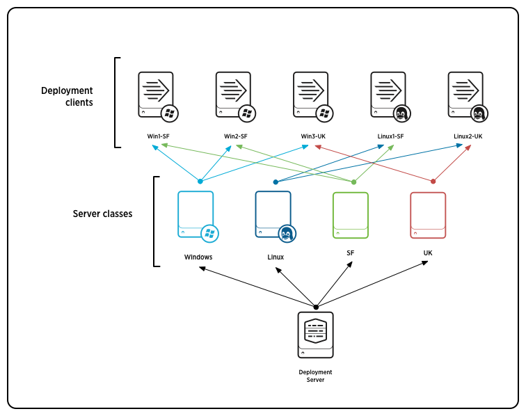
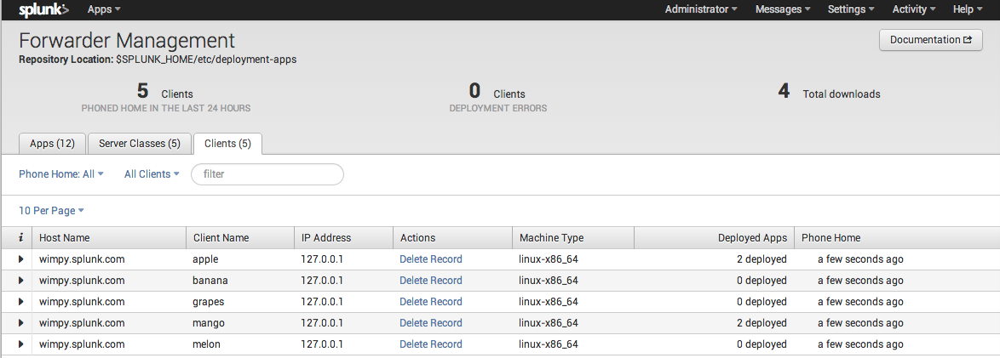
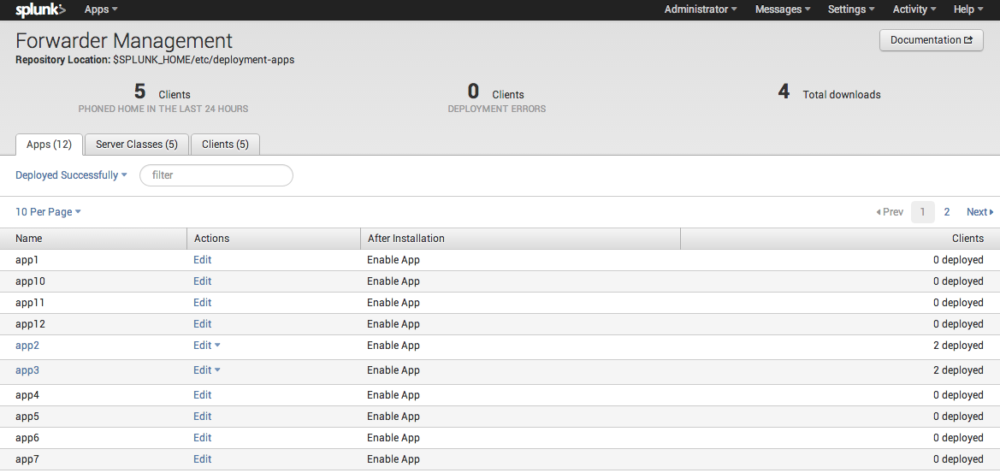
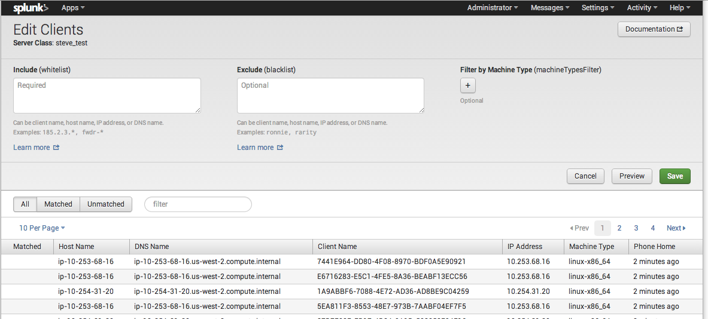
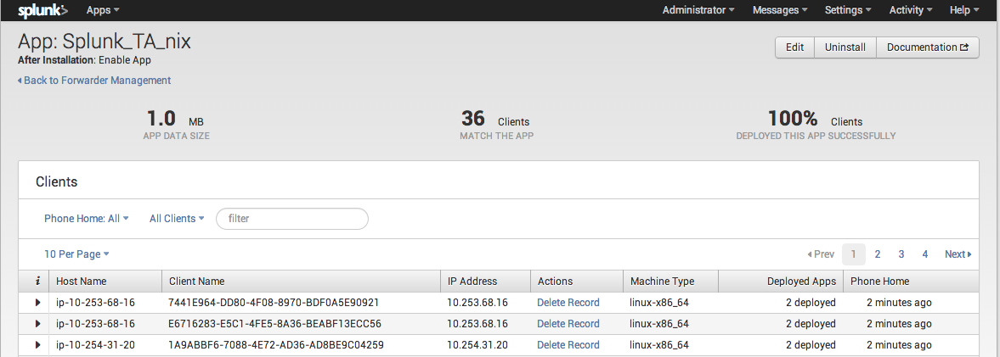
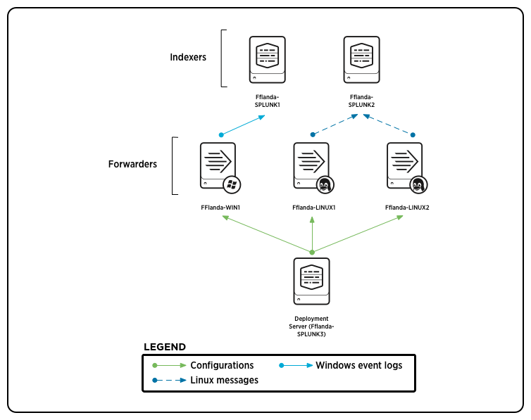

Important: Before reading this manual, you should be familiar with the fundamentals of Splunk Enterprise distributed deployment, as described in the Distributed Deployment Manual.
Splunk Enterprise provides the deployment server, with its forwarder management interface, to manage the update process across distributed instances of Splunk Enterprise.
The deployment server is the tool for distributing configurations, apps, and content updates to groups of Splunk Enterprise instances. You can use it to distribute updates to most types of Splunk Enterprise components: forwarders, non-clustered indexers, and search heads.
The deployment server is just a Splunk Enterprise instance that has been configured to manage the update process across sets of other Splunk Enterprise instances. Depending on the number of instances it's deploying updates to, the deployment server instance might need to be dedicated exclusively to managing updates. For more information, read "Plan a deployment".
| The deployment server handles configuration and content updates to existing Splunk Enterprise installations. You cannot use it for initial or upgrade installations of Splunk Enterprise or the universal forwarder. To learn how to install and deploy Splunk Enterprise, see "Step-by-step installation procedures" for full Splunk Enterprise and "Universal forwarder deployment overview" for the Splunk Enterprise universal forwarder. To learn how to upgrade your deployment to a new version of Splunk Enterprise, see "Upgrade your deployment". |
Deployment server is not required for managing forwarders and other Splunk Enterprise instances. If you prefer, you can use a third-party tool, such as Chef, Puppet, Salt, or one of the Windows configuration tools.
Forwarder management is a graphical interface built on top of deployment server that provides an easy way to configure the deployment server and monitor the status of deployment updates. Although its primary purpose is to manage large groups of forwarders, you can use forwarder management to configure the deployment server for any update purposes, including managing and deploying updates to non-clustered indexers and search heads. For most purposes, the capabilities of forwarder management and the deployment server are identical. For more information, see "Forwarder management overview".
Important: If you are upgrading from a pre-6.0 version of the deployment server, your existing serverclass.conf file might not be compatible with the forwarder management interface. This is because forwarder management can handle only a subset of the configurations possible through serverclass.conf. In some cases, you might need to continue to work directly with serverclass.conf, rather than switching to forwarder management as your configuration tool. For details on what configurations are compatible with forwarder management and how to handle deployment server upgrades, see the topic "Compatibility and forwarder management".
The deployment server makes it possible to group Splunk Enterprise components by common characteristics and then distribute content based on those groups.
For example, if you've got Splunk Enterprise instances serving a variety of different needs within your organization, it's likely that their configurations vary depending on who uses them and for what purpose. You might have some instances serving the help desk team, configured with a specific app to accelerate troubleshooting of Windows desktop issues. You might have another group of instances in use by your operations staff, set up with a few different apps designed to track network issues, security incidents, and email traffic management. A third group of instances might serve the Web hosting group within the operations team.
Rather than trying to manage and maintain these divergent Splunk Enterprise instances one at a time, you can group them based on their use, identify the configurations and apps needed by each group, and then use the deployment server to update their apps and configurations when needed.
In addition to grouping Splunk Enterprise instances by use, there are other useful types of groupings you can specify. For example, you might group instances by OS or hardware type, by version, or by geographical location or timezone.
A key use case is to manage configurations for groups of forwarders. For example, if you have forwarders residing on a variety of machine types, you can use the deployment server to deploy different content to each machine type. The Windows forwarders can get one set of configuration updates; the Linux forwarders another, and so on.
You cannot use the deployment server to update indexer cluster peer nodes or search head cluster members.
Do not use deployment server or forwarder management to manage configuration files across peer nodes (indexers) in an indexer cluster. Instead, use the configuration bundle method. You can, however, use the deployment server to distribute updates to the master node, which then uses the configuration bundle method to distribute them to the peer nodes. See "Update common peer configurations" in the Managing Indexers and Clusters of Indexers manual.
You can also use the deployment server to distribute updates to search heads in indexer clusters.
Do not use deployment server to update search head cluster members.
The deployment server is not supported as a means to distribute configurations or apps to cluster members. To distribute configurations across the set of members, you must use the search head cluster deployer. See "Use the deployer to distribute apps and configuration updates" in the Distributed Search manual.
You use a deployment server to distribute content and configurations (collectively called deployment apps) to deployment clients, grouped into server classes. Deployment apps can be full-fledged apps, such as those available on Splunkbase, or they can be just simple groups of configurations.
A deployment server is a Splunk Enterprise instance that acts as a centralized configuration manager for any number of other instances, called "deployment clients". Any full Splunk Enterprise instance - even one indexing data locally - can act as a deployment server. A deployment server cannot be a client of itself.
A deployment client is a Splunk Enterprise instance remotely configured by a deployment server. Deployment clients can be forwarders, indexers, or search heads. Each deployment client belongs to one or more server classes.
A deployment app is a set of content (including configuration files) maintained on the deployment server and deployed as a unit to clients of a server class. A deployment app might consist of just a single configuration file, or it can consist of many files. Over time, an app can be updated with new content and then redeployed to its designated clients. The deployment app can be an existing Splunk Enterprise app or one developed solely to group some content for deployment purposes.
Note: The term "app" has a somewhat different meaning in the context of the deployment server from its meaning in the general Splunk Enterprise context. For more information on Splunk Enterprise apps in general, see "What are apps and add-ons?" in the Admin manual.
A server class is a group of deployment clients that share one or more defined characteristics. For example, you can group all Windows clients into one server class and all Linux clients into another server class. You use server classes to map a group of deployment clients to one or more deployment apps. By creating a server class, you are telling the deployment server that a specific set of clients should receive configuration updates in the form of a specific set of apps.
This diagram provides a conceptual overview of the relationship between a deployment server and its set of deployment clients and server classes:

In this example, each deployment client is a Splunk Enterprise forwarder that belongs to two server classes, one for its OS and the other for its geographical location. The deployment server maintains the list of server classes and uses those server classes to determine what content to distribute to each client. For an example of how to implement this type of arrangement to govern the flow of content to clients, see "Deploy configurations to several forwarders".
For more information on deployment apps, see "Create deployment apps". For more information on server classes, see "About server classes". For more information on deployment clients, see "Configure deployment clients".
Here's a recap of the key definitions:
| Term | Meaning |
|---|---|
| deployment server | A Splunk Enterprise instance that acts as a centralized configuration manager. It deploys configuration updates to other instances. Also refers to the overall configuration update facility comprising deployment server, clients, and apps. |
| deployment client | A remotely configured Splunk Enterprise instance. It receives updates from the deployment server. |
| server class | A deployment configuration category shared by a group of deployment clients. A deployment client can belong to multiple server classes. |
| deployment app | A unit of content deployed to the members of one or more server classes. |
The deployment update process works like this:
1. Each deployment client periodically polls the deployment server, identifying itself.
2. The deployment server determines the set of deployment apps for the client, based on which server classes the client belongs to.
3. The deployment server gives the client the list of apps that belong to it, along with those apps' current checksums.
4. The client compares the app info from the deployment server with its own app info, to determine whether there are any new or changed apps that it needs to download.
5. If there are new or updated apps, the deployment client downloads them.
6. Depending on the configuration for a given app, the client might restart itself before the app changes take effect.
The forwarder management interface is an interactive, visual tool for creating server classes, which map deployment clients to deployment apps. You can also use forwarder management to manage and monitor your deployment.
The interface saves server class configurations to a serverclass.conf file, located under $SPLUNK_HOME/etc/system/local on the deployment server.
The main purpose of the forwarder management interface is to create and edit server classes. You can also use it for a number of other purposes:
You access the forwarder management interface through Splunk Web on the deployment server. To open the interface:
1. Click the Settings link at the top of Splunk Web. A window pops up with links to the set of system interfaces.
2. Select "Forwarder Management" in the Distributed Environment section. This takes you to the main page of the interface.
The following example shows the forwarder management home page as it might appear when you already have some apps, clients, and server classes:

The page contains these features (going from top to bottom):
For more information on this page, read "Use forwarder management to define server classes".
The forwarder management interface supports the vast majority of deployment server use cases. For some complex configuration requirements, however, you might need to edit serverclass.conf directly.
Important: If you switch from forwarder management to direct editing of serverclass.conf, you might not be able to use forwarder management for any subsequent configuration. This is because the forwarder management interface can handle only a subset of the configurations possible through serverclass.conf.
Here are some limitations of the interface, compared to direct editing of the configuration file:
repositoryLocation on the deployment server.
filterType, which governs the combined behavior of whitelists and blacklists, must use the default value of whitelist.
For details on forwarder management limitations and compatibility between forwarder management and serverclass.conf, see the topic "Compatibility and forwarder management".
To set up a deployment server, you need to configure both the deployment server and the deployment clients, although most configuration occurs on the deployment server side. The main actions you need to perform are these:
The order in which you perform these actions is, to some degree, up to you, although a suggested procedure is described below, in "The basic steps".
After you set up the clients, the app directories, and the mappings, you can populate the app directories with content. At any time, you can tell the deployment server to distribute new or updated content from the app directories to the clients they're mapped to.
Important: Do not use deployment server or forwarder management to distribute updates to peer nodes (indexers) in an indexer cluster. Similarly, do not use deployment server to distribute apps or configuration files to search head cluster members. See "Deployment server and clusters".
Because of high CPU and memory usage during app downloads, it is recommended that the deployment server instance reside on a dedicated machine.
Unix deployment servers can update both Windows and Unix clients. Windows deployment servers, however, should be used only with Windows clients.
Use a Unix deployment server to update Unix deployment clients. Apps that employ scripted inputs, alerts, search commands, and so on, can run into permission problems when deployed from Windows to Unix. Specifically, scripts and other programs will not be set to executable upon delivery to the Unix clients.
6.x deployment servers are compatible with deployments clients running 5.0 and above.
For most deployments, the deployment server must run on a dedicated Splunk Enterprise instance that is not serving as an indexer or a search head. The exception is if the deployment server has only a small number of clients, 50 or less. Under those limited circumstances, it is possible for an indexer or search head to double as a deployment server.
Similarity, do not host a distributed management console, which is essentially a search head, on a deployment server with more than 50 clients.
You can, however, usually run a search head cluster deployer on the same instance as the deployment server. See "Deployer requirements."
For more information about deployment server sizing, read "Estimate deployment server performance."
You need to configure both the deployment server and the deployment clients:
To set up the deployment server, you need to perform several steps on both the deployment clients and the deployment server. Although the order of the steps is optional to some degree, here's a recommended order:
1. Determine your remote configuration needs. Questions to ask include:
2. Group your deployment clients by their configuration needs. You can group clients by application, machine type, or any other criteria that make sense for your deployment topology. A client can be a member of multiple groups. For example, forwarder-x might be a member of the linux-x86_64 machine type, the north-american geographic location, and the security application groups, and forwarder-y might be a member of the windows-intel machine type, the asian geographic location, and the security application groups.
These groups form the basis for your server classes. A server class maps a group of deployment clients to sets of content (in the form of deployment apps) that get deployed to them. A client can belong to mutiple server classes. For guidance on the ways that you can group deployment clients into server classes, see "About server classes."
3. Choose one of your Splunk Enterprise instances to be the deployment server. Deployment server capability is automatically enabled on Splunk Enterprise, so there is nothing you need to do in this step, beyond choosing the instance. This is the instance where you will place the downloadable content and define your server classes. The deployment server distributes content updates to its set of deployment clients.
In most cases, the deployment server requires a dedicated Splunk Enterprise instance. See "Deployment server system requirements."
Important: The deployment server cannot be a deployment client of itself. If it is, the following error will appear in splunkd.log: "This DC shares a Splunk instance with its DS: unsupported configuration".
4. On each deployment client, specify the deployment server chosen in step 3. Refer to "Configure deployment clients" for details. You can add more clients later.
5. On the deployment server's file system, create directories for the deployment apps that will hold the content you plan to distribute to clients. Put the app content into those directories, either now or later. Refer to "Create deployment apps" for details. You can add more deployment apps later.
6. On the deployment server, create the server classes that map deployment clients to deployment apps. Refer to "About server classes" for details on configuring server classes.
Note: In most cases, the forwarder management interface can handle the server class configuration. For some unusual situations, you might need to directly edit the underlying configuration file. No matter whether you use forwarder management or directly edit the configuration file, the basic steps are the same.
Once you've completed this configuration process, you can start distributing content to the clients. See "Deploy apps to clients" for information on how to deploy new content to clients.
SSL encryption using default certificates is enabled out-of-the-box. If you change the SSL configuration on the deployment server, you must change it on its deployment clients as well. The deployment server and its clients must agree in the SSL settings for their splunkd management ports. They must all have SSL enabled, or they must all have SSL disabled.
To disable the SSL configuration on a Splunk Enterprise instance, set the enableSplunkdSSL attribute in server.conf to "false":
[sslConfig]
enableSplunkdSSL = false
For detailed information on using SSL with deployment server, see "Securing deployment server and clients" in the Securing Splunk manual.
This topic explains how to set up deployment clients to receive content from a deployment server. In most cases, you just need to specify the deployment server that you want the client to connect to.
Even though this step occurs on the deployment clients, not the deployment server itself, it is an essential part of the overall configuration of the deployment server system.
Important: The deployment server cannot be a deployment client of itself. If it is, the following error will appear in splunkd.log: "This DC shares a Splunk instance with its DS: unsupported configuration".
On each client, you must specify the deployment server it will connect to. You do this by configuring the client's deploymentclient.conf file. There are three ways to configure this file:
Note: Each deployment client must have a unique network hostname.
On the deployment client, run these CLI commands:
splunk set deploy-poll <IP_address/hostname>:<management_port>
splunk restart
Use the IP_address/hostname and management_port of the deployment server you want the client to connect with.
For example:
splunk set deploy-poll deploymentserver.splunk.mycompany.com:8089
splunk restart
You can also directly create and edit a deploymentclient.conf file in $SPLUNK_HOME/etc/system/local.
The deploymentclient.conf file requires two stanzas:
| Stanza | What it's for |
|---|---|
[deployment-client]
| Configures a number of attributes, including where to find new or updated content. You do not usually need to change the default values for this stanza. |
[target-broker:deploymentServer]
| Specifies the location of this client's deployment server. deploymentServer is the default name for a deployment server. You must specify the deployment server under this stanza.
|
This file has a large number of optional attributes, but for most deployments, you only need to set the targetUri attribute under the [target-broker:deploymentServer] stanza. This attribute specifies the client's deployment server. Here's the attribute's syntax:
| Attribute | What it's for | Default |
|---|---|---|
targetUri
| Specifies the deployment server connection information.
Set to | n/a |
For a complete list of deploymentclient.conf attributes, see the deploymentclient.conf specification file in the Admin manual.
Important: You must restart the deployment client for the change to take effect.
Here is a typical client configuration:
[deployment-client]
[target-broker:deploymentServer]
targetUri= deploymentserver.splunk.mycompany.com:8089
As is usually the case, this example accepts the default values for nearly all attributes. The one attribute that you must set, the location of the deployment server, has a value of deploymentserver.splunk.mycompany.com:8089.
You can assign each deployment client a client name. The deployment server can filter on client names, as described in "Set up client filters".
By default, the client name is set to the deployment client's GUID. If you plan to use the client name in filtering, it's recommended that you explicitly set it to some reasonable and readable name.
Important: Client names should be unique.
To configure a client name, set the clientName attribute in deploymentclient.conf to the chosen name. For example:
[deployment-client]
...
clientName = Fflanda-LINUX1
Restart the deployment client for the configuration change to take effect.
You can find information about the deployment client from two locations:
You can view the status of a deployment client from Splunk Web:
1. Click the Settings link at the top of Splunk Web. A window pops up with links to the set of system interfaces.
2. Select Server settings in the System section.
3. Choose Deployment client settings. This takes you to a read-only screen that provides some information about the client:
Once you configure and restart the client, it will initiate a handshake process with the specified deployment server. The deployment server adds it to its list of clients under the Clients tab of the forwarder management interface. For example:
To disable a deployment client, run this CLI command on the deployment client:
splunk disable deploy-client
You upgrade a client in the usual way, according to whether the client is a universal forwarder or a full Splunk Enterprise instance. The fact that an instance is a deployment client does not make any difference in how you perform the upgrade.
However, after you upgrade the client, the client will appear twice in the client list that the deployment server maintains and presents through the forwarder management interface. To eliminate the duplicate listing, you must restart the deployment server after a client upgrade.
A deployment app consists of any arbitrary content that you want to download to a set of deployment clients. The content can include:
You add a deployment app by creating a directory for it on the deployment server. Once you create the directory, you can use the forwarder management interface to map the app to deployment clients.
You can add to or change the content of an app at any time -- when you initially create the directory, or later, when you're ready to deploy or redeploy the app to deployment clients.
You create separate directories for each deployment app in a special location on the deployment server. The default location is $SPLUNK_HOME/etc/deployment-apps, but this is configurable through the repositoryLocation attribute in serverclass.conf. Underneath this location, each app must have its own subdirectory. The name of the subdirectory serves as the app name in the forwarder management interface.
Note: After an app is downloaded, it resides under $SPLUNK_HOME/etc/apps on the deployment clients.
You can add apps at any time. After creating any new app directories, you must run the CLI reload deploy-server command to make the deployment server aware of them:
splunk reload deploy-server
By creating an app directory, you have effectively created the app itself, even if the directory does not yet contain any content. The app now appears in the forwarder management interface and you can use it to define server classes, as described in "About server classes".
Important: When specifying app names (that is, when creating the app directories), you should be aware of the rules of configuration file precedence, as described in the topic "Configuration file precedence" in the Admin manual. In particular, note that app directory precedence is determined by ASCII sort order. For example, if you set an attribute/value pair whatever=1 in the configuration file x.conf in an app directory named "A", the setting in app A overrides the setting whatever=0 in x.conf in an app named "B", and so on.
You can put content into an app directory at any time prior to deploying the app to its clients. You can later update and redeploy the app. To update the app, just add to or overwrite the files in the directory. For information on updating and deploying apps to clients, see "Deploy apps to clients".
Once you create an app directory, the deployment server adds it to its list of apps under the Apps tab of the forwarder management interface. For example:

Before deciding whether to use the deployment server to manage an app, there are some issues to consider.
Important: Once you start using the deployment server to manage an app, you cannot later stop using the deployment server to manage the app. It is important to understand the implications of this.
If you remove an app from the deployment server's repositoryLocation (defined in serverclass.conf), the deployment client will delete its copy of the app. There is no way to tell the deployment client instead to start managing the app on its own.
For example, say you are using the deployment server to manage updates to "appA". To do this, you have created a directory called "appA" on the deployment server and you have placed the app's contents there. From now on, whenever the deployment clients poll the server to check for updates, they compare their checksum for appA with the server's checksum for appA. If the checksums differ, the clients download the latest version of the app from the server. However, if appA has been deleted from the server's app repository, the client behavior is to delete their own instances of the app.
Therefore, by deleting an app from the deployment server, you are not telling the clients to stop using the deployment server to manage the app and to start managing it on their own. Instead, you're actually telling them to delete the app. Once the deployment server manages an app, it always manages that app.
Warning: Because of this behavior, you should be extremely cautious before deciding to use the deployment server to manage the Splunk Enterprise search app. Managing the search app through the deployment server prevents users from saving any unique searches on their search heads. And because there's no way to tell the deployment server to stop managing an app, you're stuck with that decision.
In some cases, your indexers or search heads might be running apps that save information in lookup tables. Be careful about using the deployment server to manage such apps. When the deployment server distributes an updated app configuration, it overwrites the existing app. At that point, you'll lose those lookup tables.
A server class maps a group of deployment clients to one or more deployment apps. By creating a server class, you are telling the deployment server that a set of clients should receive updates in the form of a set of apps.
A client grouping can be based on a variety of criteria, such as machine type, OS, geographical area, or application type.
A client can belong to multiple server classes. For example, a Windows forwarder located in Kelowna and providing information to the Web hosting team might belong to three server classes: "canada", "windows", and "web_host". This diagram shows how clients can span multiple server classes:
In this example, each deployment client is a Splunk Enterprise forwarder that belongs to two server classes, one for its OS and the other for its geographical location. The deployment server maintains the list of server classes and uses those server classes to determine what content to distribute to each client. For an example of how to implement this type of arrangement to govern the flow of content to clients, see "Deploy configurations to several forwarders".
Another common way to group clients is to define one server class that applies to all deployment clients by default. You can then override various aspects of it as needed by defining more specific server classes for subgroups of clients. For example, if you have a mix of Windows and Linux universal forwarders sending data to the same indexer, you can specify that all forwarders get a common outputs.conf file, but that Windows forwarders get one inputs.conf file while Linux forwarders get a different one. To implement this, you can define an "all forwarder" server class that distributes a deployment app containing a common outputs.conf file to all forwarders, while also defining Windows and Linux server classes that distribute separate apps containing different inputs.conf files to the appropriate subsets of forwarders.
A server class is a mapping between deployment clients and apps. It tells the deployment server which apps to send to which clients. Therefore, when you define a server class, you associate one or more apps with a group of deployment clients.
You define server classes on the deployment server with these steps:
1. Create the server class.
2. Specify one or more deployment apps for the server class.
3. Specify the clients that belong to the server class.
This section provides an overview of these steps. The specifics of the configuration process depend on the method you use to create the server class: the forwarder management interface or direct editing of serverclass.conf. See "Ways to define server classes".
Create and name the server class through the forwarder management interface or directly in serverclass.conf.
Important: Server class names must be unique.
Once you've created the server class, you need to associate deployment apps with it. These are the apps that you earlier created on the deployment server's file system, as described in "Create deployment apps". There is not necessarily a one-to-one correspondence between server classes and apps. Rather, a single server class can include several apps. Similarly, one app can belong to multiple server classes.
Next, you need to associate clients with the server class. You do not ordinarily specify clients individually. Instead, you set up filters that dynamically determine which clients belong to the server class, based on common identifiable characteristics.
You define server classes on the deployment server. Server class definitions are saved in the deployment server's serverclass.conf file. There are two ways to define server classes:
serverclass.conf file. See "Use serverclass.conf to define server classes" for details. Some advanced configurations require that you directly edit serverclass.conf.
Important: Once you edit serverclass.conf directly, you will probably not be able to use the forwarder management interface for subsequent configuration. This is because forwarder management can handle only a subset of possible configurations. For details on what serverclass.conf changes are compatible with forwarder management, see the topic "Compatibility and forwarder management".
The serverclass.conf file is the key deployment server configuration file. All server class definitions get written to that file. In addition, it holds a number of other settings related to the functioning of the deployment server. For a detailed description of that file, including a list of all configuration attributes, read the serverclass.conf specification file.
For background information on Splunk Enterprise configuration files, read "About configuration files" in the Admin Manual.
When the forwarder management interface configures server classes, it writes the definitions to a copy of serverclass.conf. You can also edit serverclass.conf directly, and you might need to do so for some complex configurations.
The deployment server can have multiple versions of serverclass.conf. When there are multiple versions of a configuration file, Splunk Enterprise follows a defined process for merging the attributes from all the versions. For details on the order of precedence that Splunk Enterprise uses, read "Configuration file precedence" in the Admin Manual.
When you use forwarder management to create a new server class, it saves the server class definition in a copy of serverclass.conf under $SPLUNK_HOME/etc/system/local. If, instead of using forwarder management, you decide to directly edit serverclass.conf, it is recommended that you create the serverclass.conf file in that same directory, $SPLUNK_HOME/etc/system/local.
If a server class definition exists in a serverclass.conf file under some other directory (most typically an app directory located at $SPLUNK_HOME/etc/apps/<app_name>/local), the forwarder management interface will still display that server class, along with any other server class definitions located in files elsewhere on the system. If you use forwarder management to edit an existing server class, the interface will save the edits to the same version of serverclass.conf. That is, if you edit a server class that's defined in $SPLUNK_HOME/etc/apps/SomeApp/local/serverclass.conf, forwarder management saves the updated definition back to that same directory. However, if you then use forwarder management to create a new server class, it saves the new server class to $SPLUNK_HOME/etc/system/local/serverclass.conf.
Important: Server class names must be unique across all serverclass.conf files.
The forwarder management interface is an interactive, visual tool for creating and editing server classes, which map deployment clients to deployment apps. You run it on the deployment server. For an introduction to the interface, including details on how to access it, see "Forwarder management overview".
The interface saves server class configurations to a serverclass.conf file. The first time you save a server class, forwarder management creates the serverclass.conf file under $SPLUNK_HOME/etc/system/local on the deployment server. For information on serverclass.conf, see "The serverclass.conf file".
Note: For some advanced server class configurations, you might need to directly edit serverclass.conf. For information on forwarder management limitations, see "Compatibility and forwarder management". For details on editing serverclass.conf directly, see the topic "Use serverclass.conf to define server classes".
A server class maps deployment clients to deployment apps. Therefore, before you define a server class, you need to configure the clients and create the apps that you intend to map. For information, read the topics "Configure deployment clients" and "Create deployment apps".
After you set up the clients and apps, they appear automatically in the forwarder management interface.
There are three steps to defining a server class:
1. Create the server class.
2. Add deployment apps to the server class.
3. Specify clients for the server class.
You can perform steps 2 and 3 in either order. You can also change the set of clients and apps at any time.
Important: Each time you use the forwarder management interface to edit and save a server class configuration, the deployment server will reload and then deploy the latest app content to any clients that haven't already received it. For example, if you add an app to the server class, all clients in the server class will then receive it. If you add some new clients to the server class but don't change the apps, only the new clients will get the distribution. For a detailed discussion of what actions prompt the deployment server to deploy or redeploy apps, read the topic "Deploy apps to clients".
To create the server class, go to the forwarder management interface, as described in "Access the forwarder management interface", and perform these actions:
1. Select the Server Classes tab.
2. Select the New Server Class button.
3. Enter a name for the server class in the Title field of the pop-up window and click Save.
This takes you to a screen with prompts for adding apps and clients.
Important: Server class names must be unique. Also, they cannot contain spaces.
When you save a server class, the interface takes you to a screen with prompts for adding apps and clients. To add apps to the server class:
1. Click the Add Apps button. This takes you to the Edit Apps page. (You can also edit the set of apps later, by going to the Server Classes tab and clicking the Edit button for the particular server class.)
On the Edit Apps page, there are two columns: Unselected Apps and Selected Apps, with a list of apps under each. For a new server class, all apps will initially be in the Unselected column. The apps appearing there are the ones with subdirectories in the repository location on the deployment server (by default, $SPLUNK_HOME/etc/deployment-apps), as described in "Create deployment apps".
2. To add an app to the server class, click on it. That moves it from the Unselected Apps column to the Selected Apps column.
3. After you select all the apps for the server class, click Save. If you haven't yet added any clients, you'll now be prompted to do so.
When you save the app settings, the deployment server reloads and deploys the apps to the set of clients, assuming you have already specified the clients for this server class. If you have yet to specify the clients, the apps will get deployed once you do.
When you save a server class, the interface takes you to a screen with prompts for adding apps and clients. To add clients to the server class:
1. Click the Add Clients button. (You can also edit the set of clients later, by going to the Server Classes tab and clicking the Edit button for the particular server class.) The Edit Clients page appears:

On the Edit Clients page, there are three buttons, All, Matched and Unmatched, followed by a list of clients. The clients appearing when you select the All button will be the ones that you earlier configured for this deployment server, as described in "Configure deployment clients". The Matched and Unmatched buttons list clients according to whether they match the filters that you've created at the top of the page. For a new server class, no clients initially appear under the Matched tab.
2. To add clients to the server class, you do not specify them individually. Instead, you create filters that dynamically include or exclude clients. You enter the filters using the fields near the top of the page: Include, Exclude, and Filter by Machine Type. There's a lot to learn about creating client filters, and so the details are covered in a separate topic, "Set up client filters".
After you enter one or more filters, click the Preview button to view the set of matched clients.
If you have a long list of clients and you only want to view a subset of them, you can use the filter field to the right of the All/Matched/Unmatched buttons. This particular filter only limits the clients shown in the table; it does not filter the set of clients included in the server class. You can filter on the columns in the client table; for example, host name or IP address.
3. After you specify the clients you want in the server class, click Save. If you haven't yet added any apps, you'll now be prompted to do so.
When you save the client settings, the deployment server reloads and then deploys the set of apps for this server class to any clients that haven't already received them. It only does this if you have already specified the apps for the server class.
To view the contents of a server class:
1. Go to the Server Classes tab on the home page for Forwarder Management. This shows you a list of all server classes on the deployment server.
2. Click on the server class you want to view. This takes you to a page for that server class. The page contains three sections:
For information on managing apps, see "Use forwarder management to manage apps". For information on managing clients, see "Use forwarder management to manage clients".
You can edit a server class at any time. Go to the Server Classes tab on the entry page for Forwarder Management. Locate the server class you want and click the Edit button for that row. You have these choices:
When you click Save after editing the set of clients or apps, the deployment server reloads and makes the latest app content available to any clients that haven't already received it.
Note: The same edit actions are available from the Edit button near the upper right corner of the individual server class page.
A key activity in defining a server class is specifying the set of clients that belong to the server class. You do this through client filters.
There are three types of client filters:
linux-i686, linux-x86_64, and so on.
Note: The "client name" is a logical name that you can assign to a deployment client through the clientName attribute in deploymentclient.conf. For more information, see "Set a client name".
You can use one or all of these filters to define the set of clients for a server class. For example, you can combine a whitelist for all clients for the North American region with a machine type filter that includes all Windows clients. That way, North American Windows clients will be in their own server class and handled separately from North American Linux clients or clients in other regions.
In forwarder management, you always define filters for an entire server class. If you need to define filters at either the global or app level, you must edit serverclass.conf directly.
You define filters when you specify clients for a server class. The process of specifying clients is described in "Use forwarder management to define server classes". The instructions in that topic take you to the Edit Clients dashboard. At the top of that dashboard, there are separate fields for include (whitelist), exclude (blacklist), and machine type:
Note:
10.1.1.* or fwdr-*.
linux-x86_64, linux-i686, and windows-x64. Depending on how you're grouping your clients, you might need a separate server class for each machine type, or you might be able to combine several machine types (for example, all Linux machine types) in a single server class.
machineTypesFilter attribute in serverclass.conf, not to the machineTypes attribute.
The various filters combine like this:
The following examples describe various results and what you need to enter into the filter fields to obtain them. These are just examples and are dependent on specific conventions for client host names and DNS names.
This example includes all Windows 64-bit clients:
*
windows-x64
Important: The asterisk in the whitelist filter is necessary. Otherwise, there will be no clients for the machine type filter to operate on.
This example includes all Windows 64-bit forwarders:
fwdr-*
windows-x64
This example includes Linux clients that are in the Ops area of the company and outside North America:
*.ops.yourcompany.com
northamerican-*
linux-i686, linux-x86_64
The section in this topic that covers serverclass.conf includes additional information on filters that is also relevant to forwarder management filter configuration:
You can directly edit serverclass.conf if your filtering needs exceed the capabilities of the forwarder management interface; for example, if you need to layer filters across multiple levels or if you need to define different filters for different apps within a server class.
In serverclass.conf, you can define filters at any of three levels:
You can define multiple filters at different levels. More specific filters always take precedence. For example, you can set up a whitelist filter at the global level and then use different blacklist filters at each server class level to exclude some clients from each server class.
After you edit serverclass.conf, you must reload the deployment server so that the changes take effect. To reload the deployment server, invoke the CLI reload deploy-server command:
splunk reload deploy-server
See "Reload the deployment server" for details.
Important: Once you edit serverclass.conf directly, there's a strong possibility that you will no longer be able to use the forwarder management interface for configuration purposes. For details, see the topic "Compatibility and forwarder management".
The filters operate on the host names of the deployment clients. To determine the correct set of host names to filter on, you can run a CLI command on the deployment server:
splunk list deploy-clients
The following attributes in serverclass.conf determine filter behavior:
| Filter attribute | What it's for | Default |
|---|---|---|
| filterType | Set to "whitelist" or "blacklist".
This determines the order of execution of filters. If The
The
To summarize:
You can override this value at the Important: The forwarder management interface requires that | whitelist |
| whitelist.<n> blacklist.<n> | <n> is a number starting at 0, and incrementing by 1.
Set the attribute to
Here are some examples:
When
This will cause all deployment clients in fflanda.com except "printer" and "scanner" to match this server class. When
This will cause only the "web" and "linux" clients to match the server class. No other clients will match. The deployment server stops evaluating a filter at the first break in sequence of You can override filters at the Important: Overriding one type of filter (whitelist/blacklist) causes the other to be overridden too. If, for example, you override the whitelist, the blacklist will not be inherited from the parent; you must provide one in the stanza. | n/a |
| machineTypesFilter | Matches any of the machine types in a comma-separated list.
This setting lets you use the hardware type of the deployment client as a filter. This filter will be used only if a client matches the whitelist/blacklist filters. The value for Note: A The method for finding this string on the client varies by platform, but if the deployment client is already connected to the deployment server, you can determine the string's value by using this CLI command on the deployment server:
This will return a value for This setting will match any of the machine types in a comma-delimited list. Commonly-used machine types are: |
For more details on these attributes, see the serverclass.conf spec file in the Admin manual.
Here are several examples of serverclass.conf client filtering. Note that these examples cannot be exactly duplicated in forwarder management for various reasons. The first example, for instance, defines one whitelist at the global level. In forwarder management, all filters are defined at the server class level. In the second example, one of the server classes sets the filterType attribute to blacklist. In forwarder management, the filterType is always set to whitelist.
# Example 1
# Match all clients and includes all apps in the server class
[global]
whitelist.0=*
# whitelist matches all clients.
[serverClass:AllApps]
[serverClass:AllApps:app:*]
# a server class that encapsulates all apps in the repositoryLocation
# Example 2
# Assign server classes based on hostnames.
[global]
[serverClass:AppsForOps]
whitelist.0=*.ops.yourcompany.com
[serverClass:AppsForOps:app:unix]
[serverClass:AppsForOps:app:SplunkLightForwarder]
[serverClass:AppsForDesktops]
filterType=blacklist
# blacklist everybody except the Windows desktop machines.
blacklist.0=*
whitelist.0=*.desktops.yourcompany.com
[serverClass:AppsForDesktops:app:SplunkDesktop]
# Example 3
# Deploy server class based on machine types
[global]
# whitelist.0=* at the global level ensures that the machineTypesFilter attribute
# invoked later will apply.
whitelist.0=*
[serverClass:WindowsMachineTypes]
machineTypesFilter=windows-*
[serverClass:WindowsMachineTypes:app:WindowsApp]
[serverClass:LinuxMachineTypes]
machineTypesFilter=linux-i686, linux-x86_64
[serverClass:LinuxMachineTypes:app:LinuxApp]
# Example 4
# Blacklist a range of IP addresses, using a regular expression
[global]
[serverClass:ExcludeSomeIPAddresses]
filterType=whitelist
whitelist.0=*
blacklist.0=192.168.1.1[34][0-9]
The deployment server distributes deployment apps to clients.
It deploys apps at these times:
In some cases, it deploys apps automatically. In other cases, you need to manually initiate the deployment. In part, this depends on whether you are using forwarder management or editing serverclass.conf directly.
For help estimating the time required to deploy apps, see "Estimate deployment server performance".
After you create or change a server class, the next step is to deploy its apps to the clients qualified by its filters. If you configure the server class through forwarder management, this happens automatically. If you configure the server class by directly editing serverclass.conf, you must manually initiate the deployment.
When you first create a server class, you map a set of clients to a set of apps. After you specify both the client filters and the apps, the deployment server automatically deploys the apps to the qualifying clients. This process is described in "Use forwarder management to define server classes".
When you later edit a server class, changing either its set of apps or its client filters, the deployment server redeploys all server classes. That is, if the content of any app in any server class (not only in the server class you just edited) has changed since it was last deployed, the deployment server now deploys the latest version to the qualifying clients.
Important: Whenever you use forwarder management to change a configuration, it automatically reloads the deployment server. This causes the deployment server to redeploy any changed apps across all server classes.
You can create server classes by directly editing serverclass.conf. The deployment server does not automatically deploy apps in response to direct edits of serverclass.conf, unlike when you edit through forwarder management. Instead, you must manually reload the deployment server to initiate deployments.
To reload, invoke the CLI reload deploy-server command:
splunk reload deploy-server
After you run reload deploy-server, the deployment server deploys all server classes. That is, if any app in any server class is new or has changed since it was last deployed, the deployment server deploys the latest version to the qualifying clients for that server class. Similarly, if you have edited a client filter since the last time you reloaded the deployment server, the deployment server ensures, for each server class, that all the currently qualifying clients get the latest set of apps.
For information on creating server classes by directly editing serverclass.conf, see "Use serverclass.conf to define server classes".
When you update the content of an app, you must reload the deployment server in order for the deployment server to redeploy the app.
Note: If you are using forwarder management, you must also manually reload the deployment server if you want to redeploy the app immediately. However, if do not manually reload the deployment server, the app will still get redeployed once you make any subsequent configuration changes in forwarder management.
To redeploy an app with updated content:
1. Update the content in the relevant deployment app directory on the deployment server.
2. Reload the deployment server to make the deployment server aware of the changed content.
The deployment server then redeploys the app to all clients that it's mapped to.
The topic "Create deployment apps" described how to create app directories on the deployment server. You can add or overwrite the content in those directories at any time.
After you edit the content of an app, you must reload the deployment server so that the deployment server learns of the changed app. It then redeploys the app to the mapped set of clients.
To reload the deployment server, use the CLI reload deploy-server command:
splunk reload deploy-server
The command checks all apps for changes and notifies the relevant clients.
When a deployment client connects with the deployment server for the first time, the deployment server automatically deploys the apps for any server classes that it qualifies for. You do not need to reload the deployment server in this instance.
An example of this is when you configure a new deployment client, and that client has a machine type that an existing server class filters for.
You can exclude specified files or directories from app updates. If you enable this feature, the deployment client copies the content the first time it downloads the app but ignores it on future updates of that app. This can be particularly useful for preventing the contents of the /local directory from getting wiped out on update.
To use this feature, set the excludeFromUpdate attribute in serverclass.conf on the deployment server.
For example, say that you want to prevent app updates from overwriting my-app's /local directory. Assume the app has the typical directory structure:
my-app/
default/
local/
some-conf.conf
...
To exclude the content of the /local directory from updates, place the attribute excludeFromUpdate in the my-app stanza of serverclass.conf:
[serverClass:my-class:app:my-app]
excludeFromUpdate = $app_root$/local
When the deployment client downloads the app for the first time, it copies the /local directory and its contents. On subsequent downloads, it completely ignores the directory. Any content already in /local directory on the client remains there. Similarly, any new content in the download's /local directory is ignored.
Note the following:
$app_root$ to specify the app root directory.
excludeFromUpdate at any of the three stanza levels: global, server class, or app. If you specify it at the global level, for example, it excludes the specified content from all apps.
You can use the forwarder management interface to view the status of app distribution.
Go to the Apps tab. For each app, there's information on the number of clients the app was deployed to. Click on an app to go to a detailed page for that app:

Note: The App Data Size field near the top of the dashboard specifies the size of the app bundle. The bundle is a compressed file containing the app. It's how the deployment server packages the app to distribute it to clients. Once a client receives a bundle, it uncompresses it and installs the app in its proper location.
You can also use the CLI to get information on deployment status. To confirm that all clients received the deployment, run this command from the deployment server:
splunk list deploy-clients
This lists all the deployment clients that have contacted the deployment server since the last restart of the deployment server.
This topic can help you estimate how long it will take to download your apps to a set of clients. These are the key determining factors:
When provisioning a deployment server, note the following:
The guidance here is based on testing done using the following set-up:
To estimate the total time it will take to deploy 50MB to all your clients (assuming the deployment server hardware discussed above), you can use this formula:
T = 0.0075 * C + 2
where T is the maximum time to deploy in minutes, and C is the number of deployment clients.
For example, it would take a maximum of 9.5 minutes to deploy 50MB of apps to 1000 clients.
The guidance here is based on testing done using the following set-up:
To estimate the total time it will take to deploy 50MB to all your clients (assuming the deployment server hardware discussed above), you can use this formula:
T = 0.04 * C + 8
where T is the maximum time to deploy in minutes, and C is the number of deployment clients. This formula is valid for deployments up to 3000 clients.
If you are deploying to more than 2000 clients, you might experience significantly improved performance by increasing the phone home interval to five minutes (300 seconds).
The main function of forwarder management is to create server classes that map deployment apps to clients. This process is described in the topic "Use forwarder management to define server classes".
The interface also provides tools to manage deployment apps. You can:
To edit an app:
1. Go to the Apps tab, where you'll see a list of all apps.
2. Find the app you want to edit and click its Edit action.
3. Select the Edit option. This takes you to the Edit App screen for that app.
There are a few things you can do from here:
splunkd on the client.
When you have finished with your changes, click the Save button. This will cause the deployment server to save the changes and redeploy the app (as well as any other apps that have been updated in the interim). For details on how app deployment occurs, see "Deploy apps to clients".
Important: You cannot edit the actual content of the app from the forwarder management interface. To change its content, you must update the app through the deployment server's file system, as described in "Create deployment apps".
You can uninstall an app from all server classes or from just a single server class.
To uninstall an app from all server classes:
1. Go to the Apps tab, where you'll see a list of all apps.
2. Find the app you want to edit and click its Edit action.
3. Select the Uninstall option.
This action removes the app from all server classes and uninstalls it from all clients. It does not actually remove the app from the deployment server's file system.
To uninstall an app from just one server class:
1. Go to the Server Classes tab, where you'll see a list of all server classes.
2. Find the server class from which you want to remove the app, and click its Edit action.
3. Select the Edit Apps option. This takes you to the Edit Apps page. On the Edit Apps page, there are two columns: Unselected Apps and Selected Apps, with a list of apps under each.
4. Locate the app that you want to uninstall in the Selected Apps column.
5. Click the app name to move it from the Selected Apps column to the Unselected Apps column.
6. Click Save.
The deployment server removes the app from all clients in that server class.
To view the deployment status of an app:
1. Go to the Apps tab, where you'll see a list of all apps.
2. Locate the Clients column. The column indicates how many clients have received the app.
For more information, click on the app name. This takes you to a screen that shows a summary of information about the app, as well as the app's clients and their deployment status. You can click on the arrow to the left of each client column to see the apps and server classes that the client is associated with.
You can use forwarder management to edit client mappings and view client status.
To change the client mapping for a server class:
1. Go to the Server Classes tab, where you'll see a list of all server classes.
2. Find the server class whose client mapping you want to change, and click its Edit action.
3. Select the Edit Clients option. This takes you to the Edit Clients page, with the filter fields at the top: Include, Exclude, and Filter by Machine Type.
4. Edit the set of filters. For information on filters, see "Set up client filters".
5. Click Save.
If changing a filter results in a client getting unmapped from the server class, any previously downloaded deployment apps remain on the client but they will no longer get updated by the deployment server.
To view the status of a particular client, go to the Clients tab, where you'll see a list of all clients. At the top of the list are various options for filtering the list.
The list provides information on each client, including its host name, client name, IP address, machine type, how many apps have been deployed to it, and the last time it contacted the deployment server. You can get more information on a client by clicking the arrow on the far left of the row.
The list also contains an action, Delete Record. This action just temporarily deletes the client's record from the deployment server. The next time the client contacts the deployment server, the record will be regenerated. The action does not affect the client itself in any way.
You can optionally define server classes by directly editing the serverclass.conf configuration file, rather than using the forwarder management interface. More advanced configurations might require you to edit serverclass.conf, because the forwarder management interface only handles a subset of possible configurations. You can also start the configuration process through forwarder management and then switch to directly editing the configuration file to deal with advanced configuration issues.
Important: If you edit serverclass.conf directly, you will likely not be able to return later to configuring via the forwarder management interface. This is because the forwarder management interface can handle only a subset of the configurations possible through serverclass.conf. For details on what changes are compatible with forwarder management, see the topic "Compatibility and forwarder management".
Create a serverclass.conf file in $SPLUNK_HOME/etc/system/local on the deployment server. If you have previously defined one or more server classes by means of the forwarder management interface, this file will already exist and you just need to edit or append to it. For information on serverclass.conf, see "The serverclass.conf file".
The most important settings define the set of deployment clients and the set of apps for each server class. You can set most attributes at any of three stanza levels.
You can specify settings at the global level, as well as for individual server classes or apps within server classes. There are three levels of stanzas to enable this:
| Stanza | Meaning | Scope |
|---|---|---|
[global]
| The global level. | Attributes defined here pertain to all server classes. |
[serverClass:<serverClassName>]
| An individual server class.
There can be multiple | Attributes defined here pertain to just the server class <serverClassName>.
Note: |
[serverClass:<serverClassName>:app:<appName>]
| App within the named server class. You use this to specify the apps that the server class applies to.
There can be multiple stanzas of this type - one for each app in the server class. | <appname> can be either the name of a single app (usually, its directory name in repositoryLocation) or the wildcard character "*" to specify all apps in repositoryLocation.
Attributes defined here pertain to just the specified deployment app |
Attributes are definable at each stanza level, unless otherwise indicated in the serverclass.conf spec file. Attributes in more specific stanzas override less specific stanzas. Therefore, an attribute defined in a [serverClass:<serverClassName>] stanza will override the same attribute defined in [global].
The most common attributes are the ones that configure client filtering. See the topic "Set up client filters" for detailed information on those attributes.
Most of the non-filtering attributes are rarely changed from their defaults. These ones are of particular interest:
| Attribute | What it's for | Default |
|---|---|---|
| repositoryLocation | The location on the deployment server where the content to be deployed for this server class is stored. | $SPLUNK_HOME/etc /deployment-apps
|
| stateOnClient | Set to "enabled", "disabled", or "noop". This setting specifies whether the deployment client receiving an app should enable or disable the app once it is installed. The "noop" value is for apps that do not require enablement; for example, apps containing only event and source types. | enabled |
| restartSplunkWeb | Set to "true" or "false". Determines whether the client's Splunk Web restarts after receiving an update. | false |
| restartSplunkd | Set to "true" or "false". Determines whether the client's splunkd restarts after receiving an update.
| false |
Note: The most accurate and complete list of settings available for a given configuration file is in the .spec file for that configuration file. You can find the latest version of the .spec and .example files for serverclass.conf in serverclass.conf in the Configuration file reference in the Admin manual, or in $SPLUNK_HOME/etc/system/README.
For some simple examples of serverclass.conf configurations, see "Set up client filters". In addition, there are several longer and more complete examples presented later in this manual.
In order for changes to take effect, you must reload the deployment server after you add a server class or change its configuration. For example, if you add an app to a server class, the deployment server only deploys the new app to the server class clients after you reload. Similarly, if you change the client filters for a server class, the change in the set of clients (and any subsequent app deployment) only takes effect after you reload.
To reload the deployment server, invoke the CLI reload deploy-server command:
splunk reload deploy-server
For more information on reloading the deployment server, see the topic "Deploy apps to clients".
Forwarder management can handle the configuration needs for most deployment servers. However, if you have complex requirements, you might still need to edit serverclass.conf.
If you do all your configuration in one tool or the other (forwarder management or direct editing of serverclass.conf), you can skip the rest of this topic. Compatibility issues can arise, however, if you alternate between forwarder management and the configuration file, performing configuration through both interfaces.
For information on directly configuring serverclass.conf, read "Use serverclass.conf to define server classes".
The forwarder management interface provides a key subset of the configuration capabilities available through serverclass.conf. Most configuration needs can be met by working exclusively in forwarder management.
If you have unusually complex requirements, you can start by configuring in forwarder management and then switch to serverclass.conf for advanced configuration. However, once you start editing the configuration file directly, there is a strong likelihood that you will not be able to later return to configuring via the forwarder management interface. This is because the forwarder management interface supports only a subset of the capabilities available through the configuration file.
If you do return to forwarder management after editing serverclass.conf, forwarder management will detect any incompatibilities and generate error messages in appropriate locations in the interface. As long as the incompatibilities persist, you will not be able to configure via the forwarder management interface.
Even if you can no longer use the interface to edit configurations, you can still use it to monitor the deployment. It will correctly show the mappings between apps, clients, and server classes. It will also correctly report the deployment metrics.
If you have configured serverclass.conf in a pre-6.0 release of Splunk Enterprise (that is, before the forwarder management interface was introduced), you might have introduced incompatibilities that prevent the forwarder management interface from functioning properly after you upgrade to 6.0. When you first view the forwarder management interface, it will detect any incompatibilities and generate error messages as needed. As long as incompatibilities exist, you will not be able to configure via forwarder management.
If incompatibilities are detected but you want to use the forwarder management interface going forward, you need to do one of two things:
serverclass.conf file and start fresh with the forwarder management interface, using it to recreate your server classes and other settings.
serverclass.conf file directly, so that it conforms strictly to the capabilities of the forwarder management interface. This should be possible in most situations. If you want to do this, see the following section for a list of the key incompatibilities that you need to account for.
Important: Whether forwarder management can handle your configuration depends on your specific needs.
Some serverclass.conf attributes are incompatible with the forwarder management interface. In addition, some attributes can be set at multiple levels (global, server class, and app) in the configuration file but are only allowable at a single level with forwarder management.
If your serverclass.conf file contains incompatible attributes, the forwarder management interface goes into lock-down mode. You cannot use it for configuration purposes until the incompatibilities are resolved.
This table correlates the serverclass.conf attributes with their support in forwarder management.
| Attribute | Default | Global | Server Class | App |
|---|---|---|---|---|
| repositoryLocation | $SPLUNK_HOME/etc/deployment-apps | Supported | Unsupported | n/a |
| targetRepositoryLocation | $SPLUNK_HOME/etc/apps | Unsupported | n/a | n/a |
| tmpFolder | $SPLUNK_HOME/var/run/tmp | Unsupported | n/a | n/a |
| continueMatching | True | Unsupported | Unsupported | n/a |
| endpoint | $deploymentServerUri$/services/streams/deployment?name=$serverClassName$:$appName$ | Unsupported | Unsupported | n/a |
| filterType | whitelist (forwarder management implicitly uses this default value) | Unsupported | Unsupported | Unsupported |
| whitelist | none | Unsupported | Supported | Unsupported |
| blacklist | none | Unsupported | Supported | Unsupported |
| machineTypesFilter | none | Unsupported | Supported | Unsupported |
| machineTypes | none | Unsupported | Unsupported | Unsupported |
| stateOnClient | enabled | Unsupported | Single per-app setting across all server classes | |
| restartSplunkd | False | Unsupported | Single per-app setting across all server classes | |
| restartSplunkWeb | False | Unsupported | Unsupported | Unsupported |
| appFile | none | n/a | n/a | Unsupported |
Notes regarding entries in the table:
serverclass.conf.
stateOnClient and restartSplunkd attributes are configured under the app-level stanzas. App-level stanzas include both an appName and a serverClassName component, like this: [serverClass::app:]. See "Use serverclass.conf to define server classes".[serverClass:X:app:A], you can specify stateOnClient=enabled, while in [serverClass:Y:app:A] (same app, different server class), you can specify stateOnClient=disabled. So, depending on the server class, the same app will be either enabled or disabled when it gets downloaded to the client.[serverClass:X:app:A] and [serverClass:Y:app:A] must both configure stateOnClient identically. The same condition applies to restartSplunkd.
A common use for deployment servers is to manage configuration files for forwarders. In some distributed environments, forwarders can number into the thousands, and the deployment server greatly eases the work of configuring and updating them. This example shows how to use the deployment server to initially configure a set of dissimilar universal forwarders. A follow-up example, in "Example: Add inputs to forwarders", shows how to use the deployment server to update the forwarders' configurations with new inputs.
The example sets up the following distributed environment, in which a deployment server deploys configurations for three universal forwarders sending data to two indexers:
The forwarders are deployment clients, receiving their configuration files from the deployment server.
Here's the basic set up:

For information on forwarders (including the universal forwarder), see "About forwarding and receiving" in the Forwarding Data manual.
For information on monitoring Windows event log data, see "Monitor Windows event log data" in the Getting Data In manual.
For information on monitoring files, such as message logs, see "Monitor files and directories" in the Getting Data In manual.
Here's an overview of the set-up process (the detailed steps follow in the next section):
On each indexer that will be receiving data from the forwarders:
1. Enable receiving through the CLI.
2. Restart the indexer.
On each deployment client (forwarder):
1. Create a deploymentclient.conf file that points to the deployment server.
2. Restart the forwarder.
On the deployment server:
1. Create directories for the deployment apps.
2. Use forwarder management to create the set of server classes for the deployment clients (forwarders). You'll create two server classes to represent the two OS types (Windows, Linux). Each server class will map a set of clients to two separate apps, for a total of four apps. These apps, defined in a later step, encapsulate:
This configuration results in each universal forwarder belonging to a server class and receiving two apps: one for its inputs and one for its outputs.
Note: You can also create the server classes directly in serverclass.conf, as described below in "Configure server classes in serverclass.conf"
3. Populate the app directories with the contents of the apps. Each app consists of a configuration file, either outputs.conf or inputs.conf.
4. Deploy the apps by reloading the deployment server.
After a short delay (while the forwarders receive and act upon their deployed content), Windows event logs begin flowing from Fflanda-WIN1 to Fflanda-SPLUNK1, and /var/log/messages begin flowing from Fflanda-LINUX1 and Fflanda-LINUX2 to Fflanda-SPLUNK2.
1. Install Splunk Enterprise on the machine where you want the indexer to reside.
2. Run the following CLI command:
splunk enable listen 9997 -auth <username>:<password>
This specifies that the indexer will serve as a receiver, listening for data on port 9997. With proper authorization, any forwarder can now send data to the receiver by designating its IP address and port number. You must enable the indexers as receivers before you configure the forwarders to send data to them.
For more information on enabling receivers, see "Enable a receiver" in the Forwarding Data manual.
3. Restart the indexer.
1. Install the forwarder on the machine where you want it to reside, if you haven't already done so.
2. Specify the deployment server that the forwarder will poll. You can do this as part of the forwarder installation process, or later, by editing $SPLUNK_HOME/etc/system/local/deploymentclient.conf, like this:
[deployment-client]
[target-broker:deploymentServer]
# Specify the deployment server; for example, "10.1.2.4:8089".
targetUri= <URI:port>
See "Configure deployment clients" for details on how to configure this file. To learn how to specify the deployment server at installation time, see "Universal forwarder deployment overview" and the topics that follow it in the Forwarding Data manual.
3. Restart the forwarder.
1. Install Splunk Enterprise, if you haven't already done so.
2. Create these deployment app directories:
$SPLUNK_HOME/etc/deployment-apps/fwd_to_splunk1
$SPLUNK_HOME/etc/deployment-apps/fwd_to_splunk2
$SPLUNK_HOME/etc/deployment-apps/winevt
$SPLUNK_HOME/etc/deployment-apps/linmess
The directory name determines the name of the app: "fwd_to_splunk1", "fwd_to_splunk2", etc.
Note: This procedure and the one that follows both use forwarder management to configure the server classes. For an example of how to configure these server classes instead by direct editing of serverclass.conf, see "Configure server classes in serverclass.conf" later in this topic.
To configure the Fflanda-WIN server class for Windows forwarders, go to the forwarder management interface and perform these actions:
1. Select the Server Classes tab.
2. Select the New Server Class button.
3. Enter Fflanda-WIN in the Title field of the pop-up window and click Save. This takes you to a screen with prompts for adding apps and clients.
4. Click the Add Apps button. This takes you to the Edit Apps page. On this page, there are two columns: Unselected Apps and Selected Apps, with a list of apps under each. For a new server class, all apps will initially be in the Unselected column.
5. In the Unselected Apps column, look for the apps winevt and fwd_to_splunk1. Click on each of these apps to move them to the Selected Apps column.
6. Click Save to save the apps in the server class. You'll now be prompted to add clients to the server class. Click the Add Clients button. This takes you to the Edit Clients page.
7. To configure a filter to include all Windows clients, enter Fflanda-WIN* in the Include field and click Save.
8. Set the apps' post-deployment behavior. For each app, go to the App tab, find the row with the app, and click the Edit action to edit the app. In the After installation section near the top of the page, select Enable app and Restart Splunkd.
To configure the Fflanda-LINUX server class for Linux forwarders, go to the forwarder management interface and perform these actions:
1. Select the Server Classes tab.
2. Select the New Server Class button.
3. Enter Fflanda-LINUX in the Title field of the pop-up window and click Save. This takes you to a screen with prompts for adding apps and clients.
4. Click the Add Apps button.
5. In the Unselected Apps column, look for the apps linmess and fwd_to_splunk2. Click on each of these apps to move them to the Selected Apps column.
6. Click Save to save the apps in the server class. You'll now be prompted to add clients to the server class. Click the Add Clients button. This takes you to the Edit Clients page.
7. To configure a filter to include all Linux clients, enter Fflanda-LINUX* in the Include field and click Save.
8. Set the apps' post-deployment behavior. For each app, go to the App tab, find the row with the app, and click the Edit action to edit the app. In the After installation section near the top of the page, select Enable app and Restart Splunkd.
See "Use forwarder management to define server classes" for details on the forwarder management interface.
1. Create $SPLUNK_HOME/etc/deployment-apps/fwd_to_splunk1/default/outputs.conf with the following settings:
[tcpout]
defaultGroup=splunk1
[tcpout:splunk1]
# Specifies the server that receives data from the forwarder.
server=10.1.2.2:9997
For information on outputs.conf, see "Configure forwarders with outputs.conf" in the Forwarding Data manual.
2. Create $SPLUNK_HOME/etc/deployment-apps/fwd_to_splunk2/default/outputs.conf with the following settings:
[tcpout]
defaultGroup=splunk2
[tcpout:splunk2]
server=10.1.2.3:9997
3. Create $SPLUNK_HOME/etc/deployment-apps/winevt/default/inputs.conf with the following settings:
[WinEventLog:Application]
disabled=0
[WinEventLog:Security]
disabled=0
[WinEventLog:System]
disabled=0
For information on monitoring Windows event log data, see "Monitor Windows event log data" in the Getting Data In manual.
4. Create $SPLUNK_HOME/etc/deployment-apps/linmess/default/inputs.conf with the following settings:
[monitor:///var/log/messages]
disabled=false
sourcetype=syslog
For information on monitoring files, such as message logs, see "Monitor files and directories" in the Getting Data In manual.
To deploy the apps, just reload the deployment server:
splunk reload deploy-server
Each forwarder will now poll the deployment server, download its configuration files, restart, and begin forwarding data to its receiving indexer.
Note: When you change the content of an app, you must always invoke the reload command, so that the clients know they need to download the new content.
For a follow-up example showing how to use the deployment server to update forwarder configurations, see "Example: Add inputs to forwarders".
Instead of using forwarder management to configure server classes, you can directly edit serverclass.conf. For most purposes, however, it is faster and easier to use forwarder management.
In the case of the example under discussion, you can fully define the required server classes with forwarder management, so it is not necessary to edit serverclass.conf. However, for those who prefer to work directly in configuration files, this subtopic shows how to create the example's set of server classes by editing serverclass.conf. This version takes advantage of some minor optimization only available through direct editing of serverclass.conf.
Create $SPLUNK_HOME/etc/system/local/serverclass.conf with the following settings:
# Global server class
[global]
# Filter (whitelist) all clients
whitelist.0=*
# Server class for Windows
[serverClass:Fflanda-WIN]
# Filter (whitelist) all Windows clients
whitelist.0=Fflanda-WIN*
# App for inputting Windows event logs
# This app is only for clients in the server class Fflanda-WIN
[serverClass:Fflanda-WIN:app:winevt]
#Enable the app and restart Splunk, after the client receives the app
stateOnClient=enabled
restartSplunkd=true
# App for forwarding to SPLUNK1
# This app is only for clients in the server class Fflanda-WIN
[serverClass:Fflanda-WIN:app:fwd_to_splunk1]
stateOnClient=enabled
restartSplunkd=true
# Server class for Linux
[serverClass:Fflanda-LINUX]
# Filter (whitelist) all Linux clients
whitelist.0=Fflanda-LINUX*
# App for inputting Linux messages
# This app is only for clients in the server class Fflanda-LINUX
[serverClass:Fflanda-LINUX:app:linmess]
stateOnClient=enabled
restartSplunkd=true
# App for forwarding to SPLUNK2
# This app is only for clients in the server class Fflanda-LINUX
[serverClass:Fflanda-LINUX:app:fwd_to_splunk2]
stateOnClient=enabled
restartSplunkd=true
See "Use serverclass.conf to define server classes" for details on how to configure this file.
Using the above example, the communication from Fflanda-WIN1 to Fflanda-SPLUNK3 on port 8089 would look like this:
Fflanda-WIN1: Hello, I am Fflanda-WIN1.
Fflanda-SPLUNK3: Hello, Fflanda-WIN1. I have been expecting to hear from you. I have you down as a member of the Fflanda-WIN server class, and you should have the fwd_to_splunk1 (checksum=12345) and winevt (checksum=12378) apps.
Fflanda-WIN1: Hmmm, I don’t have those configs. Using this connection I just opened up to you, can I grab the configs from you?
Fflanda-SPLUNK3: Sure! I have them ready for you.
Fflanda-WIN1: Thanks! I am going to back off a random number of seconds between 1 and 60 (in case you have a lot of clients that are polling you at the moment) ... OK, now send me the files.
Fflanda-SPLUNK3: Done! You now have fwd_to_splunk1-timestamp.bundle and winevt-timestamp.bundle.
Fflanda-WIN1: Awesome! I am going to store them in my $SPLUNK_HOME/etc/apps directory. Now I am going to restart myself, and when I come back up I am going to read the configurations that you sent me directly out of the .bundle files, which I know are just tar balls with a different extension.
A couple of minutes go by....
Fflanda-WIN1: Hello, I am Fflanda-WIN1.
Fflanda-SPLUNK3: Hello, Fflanda-WIN1. I have been expecting to hear from you. I have you down as a member of the Fflanda-WIN server class, and you should have the fwd_to_splunk1 (checksum=12345) and winevt (checksum=12378) Apps.
Fflanda-WIN1: Hmmm, I already have both of those, but thanks anyway!
Later on, an admin modifies the winevt/inputs.conf file on Fflanda-SPLUNK3 to disable the collection of system event logs, and then runs the CLI command splunk reload deploy-server to force the deployment server to rescan serverclass.conf and the app directories. The next time Fflanda-WIN1 talks to Fflanda-SPLUNK3, it goes like this:
Fflanda-WIN1: Hello, I am Fflanda-WIN1.
Fflanda-SPLUNK3: Hello, Fflanda-WIN1. I have been expecting to hear from you. I have you down as a member of the Fflanda-WIN server class, and you should have the fwd_to_splunk1 (checksum=12345) and winevt (checksum=13299) Apps.
Fflanda-WIN1: Hmmm, I know I have those configs, but the checksum I have for the winevt configs is different than the one you just told me about. Using this connection I just opened up to you, can I grab the updated winevt config from you?
Fflanda-SPLUNK3: Sure! I have it ready for you.
Fflanda-WIN1: Thanks! I am going to back off a random number of seconds between 1 and 60 (in case you have a lot of clients that are polling you at the moment) ... Ok, now send me the updated config.
Fflanda-SPLUNK3: Done! You now have winevt-newer_timestamp.bundle.
Fflanda-WIN1: Awesome! I am going to store it in my $SPLUNK_HOME/etc/apps directory and move the old winevt.bundle I had out of the way. Now I am going to restart myself, and when I come back up, I'll have the most up-to-date config.
The previous topic, "Extended example: Deploy configurations to several forwarders", described setting up a deployment environment to manage a set of universal forwarders. It showed how to configure a new deployment server to deploy content to a new set of deployment clients. The current example follows on directly from there, using the configurations created in that topic. It shows how to update a forwarder configuration file and deploy the updated file to a subset of forwarders, defined by a server class.
This example starts with the set of configurations and Splunk Enterprise instances created in the topic "Extended example: Deploy configurations to several forwarders". The Linux universal forwarders now need to start monitoring data from a second source. To accomplish this, perform these steps on the deployment server:
1. Edit the inputs.conf file for the Linux server class to add the new source, overwriting the previous version in its apps directory.
2. Reload the deployment server, so that it becomes aware of the change and can deploy it to the appropriate set of clients (forwarders).
You make changes only on the deployment server. When the deployment clients in the Linux server class next poll the server, they'll be notified of the changed inputs.conf file. They'll download the file, enable it, restart splunkd, and immediately begin monitoring the second data source.
On the deployment server:
1. Edit $SPLUNK_HOME/etc/deployment-apps/linmess/default/inputs.conf to add new inputs:
[monitor:///var/log/messages]
disabled=false
sourcetype=syslog
[monitor:///var/log/httpd]
disabled=false
sourcetype = access_common
2. Reload the deployment server:
splunk reload deploy-server
Once this command has been run, the deployment server notifies the clients that are members of the Fflanda-LINUX server class of the changed file. They'll download the file, enable it, restart splunkd, and immediately begin monitoring the second data source.